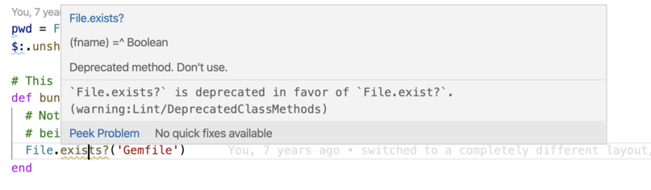
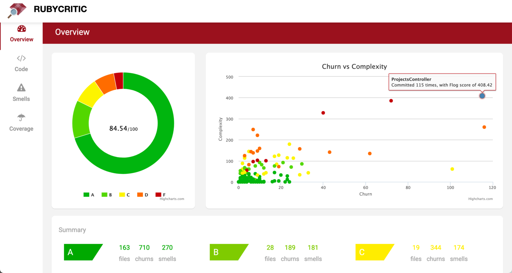
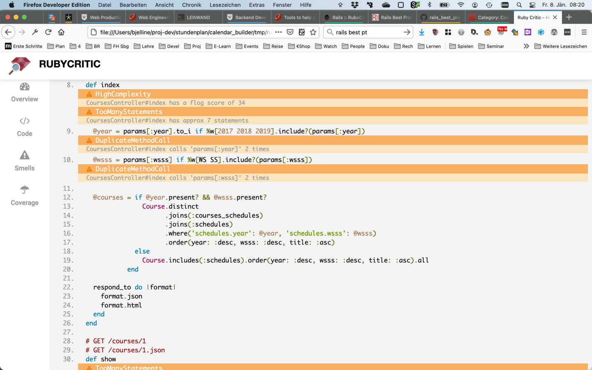

With this guide will get to know some tools that will help you produce good code, and keep the quality up.
You will get to know tools for Ruby for
Any automatic analysis done on the source code of a program is called static analysis. The simplest form is a check of coding conventions. This is called "linting".
This is in contrast do dynamic analysis of a running program.
A Style Guide or Coding Convention places restrictions on the way you write your code: it tells you how deep indentation should be, whether to put spaces inside brackets, and so on.
You can invest a lot of emotional energy in this, and fight with your co-workers over the details of formatting. Or you can just decide on a style guide to follow, and be done with the discussions.
To lint is to check if code follows a style guide. Linting tools are available for all languages:
You can incorporate linting into your editor, this way you will never stray far from the style guide.

Software metrics try to measure aspects of code. The result is a number.
Running rails stats will give you a first overview of the "size" of a rails app:
$ rails stats +----------------------+--------+--------+---------+---------+-----+-------+ | Name | Lines | LOC | Classes | Methods | M/C | LOC/M | +----------------------+--------+--------+---------+---------+-----+-------+ | Controllers | 1137 | 799 | 18 | 136 | 7 | 3 | | Helpers | 26 | 21 | 0 | 2 | 0 | 8 | | Jobs | 4 | 2 | 1 | 0 | 0 | 0 | | Models | 402 | 185 | 13 | 13 | 1 | 12 | | Mailers | 22 | 15 | 2 | 1 | 0 | 13 | | Channels | 12 | 8 | 2 | 0 | 0 | 0 | | JavaScripts | 46 | 8 | 0 | 3 | 0 | 0 | | Libraries | 54 | 40 | 2 | 2 | 1 | 18 | | Controller tests | 520 | 55 | 8 | 5 | 0 | 9 | | Helper tests | 0 | 0 | 0 | 0 | 0 | 0 | | Model tests | 234 | 47 | 10 | 3 | 0 | 13 | | Mailer tests | 14 | 5 | 2 | 0 | 0 | 0 | | Integration tests | 0 | 0 | 0 | 0 | 0 | 0 | | System tests | 16 | 12 | 1 | 1 | 1 | 10 | +----------------------+--------+--------+---------+---------+-----+-------+ | Total | 2487 | 1197 | 59 | 166 | 2 | 5 | +----------------------+--------+--------+---------+---------+-----+-------+ Code LOC: 1078 Test LOC: 119 Code to Test Ratio: 1:0.1
When you run rubocop it will examine all the files
in the current directory, and in subdirectories.
$ rubocop Inspecting 93 files .........C....CC....... Offenses: app/models/concrete_item.rb:35:5: C: Layout/EmptyLineAfterGuardClause: Add empty line after guard clause. return false if t.nil? ^^^^^^^^^^^^^^^^^^^^^^ config/routes.rb:28:20: C: Layout/LeadingCommentSpace: Missing space after #. resources :items #, except: %i[index] ^^^^^^^^^^^^^^^^^^^^ config/routes.rb:29:2: C: Layout/CommentIndentation: Incorrect indentation detected (column 1 instead of 2). # get 'items' => 'items#index' ^^^^^^^^^^^^^^^^^^^^^^^^^^^^^^ 93 files inspected, 3 offenses detected
In this example rubocop found 3 "offenses" to complain about. It gives you all the necessary info to find and understand the problem:
config/routes.rb, line 29, column 2Layout/CommentIndentation
# get 'items' => 'items#index' ^^^^^^^^^^^^^^^^^^^^^^^^^^^^^^
The rules that rubocop follows are called "cops". The default rules are listed here.
There is good documentation for each cop, you can find it on docs.rubocop.org, or by googling the name:
Layout cops are simple and can be corrected automatically.
With the option -a rubocop will try to fix the code:
$ rubocop -A Inspecting 93 files .........C....CC....... Offenses: app/models/concrete_item.rb:35:5: C: [Corrected] Layout/EmptyLineAfterGuardClause: Add empty line after guard clause. return false if t.nil? ^^^^^^^^^^^^^^^^^^^^^^ config/routes.rb:28:20: C: [Corrected] Layout/LeadingCommentSpace: Missing space after #. resources :items #, except: %i[index] ^^^^^^^^^^^^^^^^^^^^ config/routes.rb:29:2: C: [Corrected] Layout/CommentIndentation: Incorrect indentation detected (column 1 instead of 2). # get 'items' => 'items#index' ^^^^^^^^^^^^^^^^^^^^^^^^^^^^^^ 93 files inspected, 3 offenses detected, 3 offenses corrected
You can configure rubocop by writing a file .rubocop.yml in your
projects root folder. Create it with rubocop --init.
You can use the configuration to exclude some files and directories:
AllCops:
TargetRubyVersion: 2.3.4
Exclude:
- "db/migrations/2020*"
- "lib/minitest/extra_tests_plugin.rb"
- "db/migrate/20210103183933_add_year_to_schedule.rb"
In this example migrations from the year 2020 are excluded from rubocop - these files will never be used again und there's no need to change them now. Two other files are also excluded.
Instead of excluding a whole file you can disable rubocop for some lines in a file like this:
# rubocop:disable Rails/SkipsModelValidations count_persons = enroll_data_lecturer.update_all(set_fields) # rubocop:enable Rails/SkipsModelValidations
Here the method update_all is used. The cop SkipsModelValidations warns against using it
method because it skips validations. The programmer is aware of this fact
an still choses to use the method. To keep rubocop from complaining
or automatically replacing the code,this cop is disabled for one line.
When you run eslint it will examine all the files
in the current directory, and in subdirectories.
The rules that eslint follows are configured
in an .eslintrc.* file or an eslintConfig field in a package.json file.
Especially important are parser options because eslint can be used on different version of JavaScript and TypeScript. See the documentation.
You can also configure rule just for a few lines of code by writing comments in your source code. The following example was taken from Jeff Lowreys article
const getFinalContext = (context) => {
/* eslint-disable-next-line no-unused-vars */
const { calls, ...finalContext } = context;
return finalContext;
}
The above code does a destructuring assignment from a passed-in context parameter. The function is only interested in the rest assignment to finalContext, and “discards” the first assignment, calls. Jeff Lowrey disables the rule that
would complain about having an unused variable call by using the comment /* eslint-disable-next-line no-unused-vars */. This only applies to the next code line, though, and the rule will remain in effect for the rest of the file.
For the framework Rails there exists a collection of "best pracices" - hints how to use the framworks. They are doumented on rails-bestpractices.com
There is a command line tool that checks your Rails projects against these best pracices and can also fix some of the problems:
rubycritic combines several tools and generates an report as several html pages:


Brakeman is a static analysis tool that specializes in security problems for Ruby on Rails. Use it on your rails project to find and fix security problems:
For JavaScript there are some ESLint rules you can install for checking for security problems:
For all programming langauges you also have to think about security and dependencies.
/